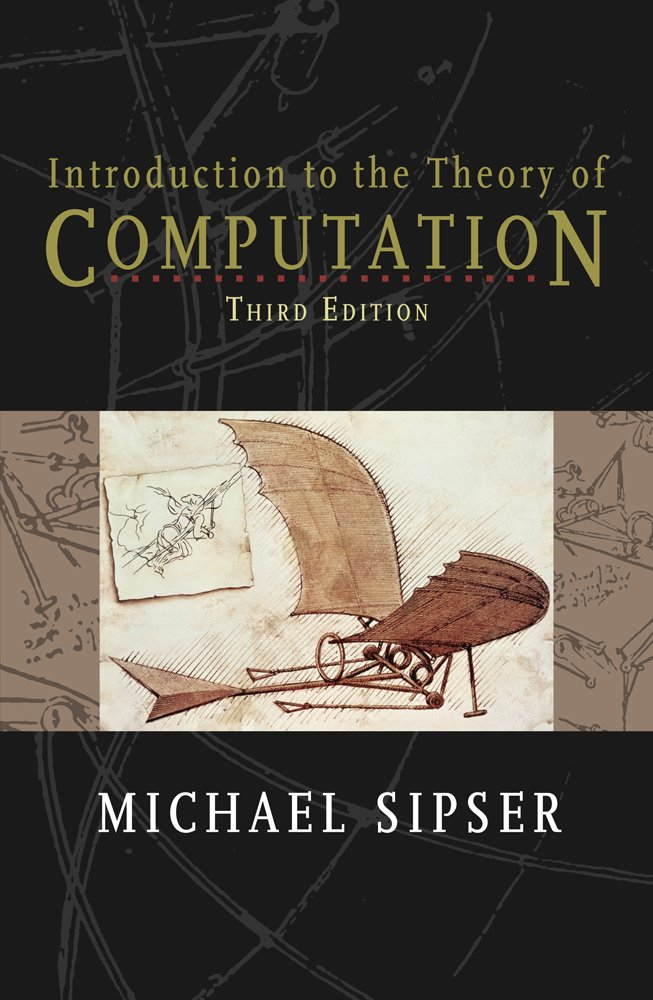

Teoría de la computación
Bienvenidos a Teoría de la computación (alias TC)!
Soy Ilario Bonacina y si eres un estudiante de los grupos 21P y 21L, entonces soy uno de tus profesores para este cuatrimestre. Esta es la página web que utilizaré como apoyo para los problemas/clases de laboratorio de TC.
La profesora responsable del curso es Carme Àlvarez Faura (correo electrónico). Para preguntas administrativas, por favor, preguntar a ella directamente.
Mi correo electrónico para TC es ilario.bonacina+TC@upc.edu. El último día posible para hacer preguntas por correo electrónico es 5 dias antes del los examenes. Para consultas presenciales, también podéis encontrarme en el despacho 223, edificio \Omega (con cita previa por email).
La principal característica de la metodologia docent és l’auto-aprenentatge que es basa en la utilització del material docent per conèixer els fonaments tèorics de l’assignatura així com en la resolució de problemes a la pissarra que consoliden aquests coneixements teòrics.
El professor introdueix els fonaments tèorics bàsics de cada tema i soluciona alguns problemes. Els estudiants aprenen la teoria durant el seu temps de treball personal mitjançant l’estudi dels temes indicats pel professor de la bibliografia o dels vídeos i d’altres materials complementaris com apunts, llibres i llistes de problemes resolts, tots ells lliurement accessibles a través de la web.
Durant les hores de problemes, els estudiants surten a la pissarra a explicar solucions a problemes que se’ls hi han assignat amb anterioritat. El professor intervé per corregir una solució, matitzar un argument, o posar émfasi en aquells aspectes que considera rellevants i que no han quedat del tot clars en l’explicació de l’alumne. També pren nota de cada presentació per tal de tenir-la en compte en l’avaluació de l’assignatura.
Durant les hores de laboratori, els estudiants miren de resoldre problemes davant de la màquina que són avaluats automàticament. El professor està present per tal d’atendre els dubtes que els alumnes li puguin plantejar. Els estudiants poden aprofitar aquestes classes per preparar els problemes que se’ls hi han assignat amb anterioritat, però també per estudiar el material teòric si no ho han fet abans pel seu compte, i per preguntar dubtes sobre la teoria.
- Teoria de la computació – Llenguatges regulars i incontextuals
-
Rafel Cases, Lluís Màrquez
Tema 1 — Capítol 1
Tema 2 — Capítol 4 i Capítol 5
Tema 3 — Capítol 2 i Capítol 3
Tema 4 — Capítol 6 (des de la secció 6.1 fins la secció 6.4.)
Tema 5.1 — Capítol 7.1
Tema 5.2 — Capítol 8

- Introduction to the Theory of Computation
-
Michael Sipser
CENGAGE Learning, 2013
Sipser’s MIT Video Lectures
Tema 1 — Chapter 0. Introduction
Tema 2 — Section 1.1 Finite Automata i Section 1.2 Nondeterminism. No conté una secció explícita per a la Minimització d’Autòmats, només Problems 1.51 i 1.52.
Tema 3 — Section 2.1 Context-Free Grammars
Tema 4 — Section 1.3 Regular Expressions
Tema 5.1 — Section 1.4 Non-regular Languages
Tema 5.2 — Section 2.2 Pushdown Automata
Tema 6 — Chapter 3. The Church-Turing Thesis and Section 4.1 Decidable Languages
Tema 7 — Section 4.2 Undecidability and Chapter 5. Reducibility
Tema 8 — Section 5.2 A Simple Undecidable Problem and Section 6.2 Decidability of Logical Theories
Material complementario adicional es disponible a la página principal del curso.
Aquesta secció està subjecta a canvis.
Semana 1
Sesión 1.1 (teoria) — Presentación del curso y Tema 1 (Teoria de Lenguajes)
Sesión 1.2 (teoria y laboratorio) — DFAs (1h teoria y 1h RACSO)
Asignación A1 — problemas sobre el Tema 1 (Teoria de Lenguajes)
Semana 2
Sesión 2.1 (problemas) — Asignación A1, presentaciones de los estudiantes
Sesión 2.2 (laboratorio) — DFAs
Asignación A2 — problemas sobre el Tema 2 (Autómata finitos)
Semana 3
Sesión 3.1 (problemas) — Asignación A2, presentaciones de los estudiantes
Sesión 3.2 (laboratorio) — DFAs
Semana 4
Sesión 4.1 (problemas) — Asignación A2, presentaciones de los estudiantes
Sesión 4.2 (laboratorio) — CFGs
Asignación A3 — problemas sobre el Tema 3 (gramaticas incontextuales)
Semana 5
Sesión 5.1 (problemas) — Asignación A3, presentaciones de los estudiantes
Sesión 5.2 (laboratorio) — CFGs
Semana 6
Sesión 6.1 (problemas) — Asignación A3, presentaciones de los estudiantes
Sesión 6.2 (laboratorio) — Operaciones regulares
Semana 7
Sesión 7 — Examen Parcial 1 TBD
Semana 8
Sesión 8.1 (teoria) — Expressiones regulares y no regularidad
Sesión 8.2 (laboratorio) — Operaciones regulares y PDAs
Asignación A4 — problemas sobre el Tema 4 (Expressiones regulares)
Semana 9
Sesión 9.1 (problemas) — Asignación A4, presentaciones de los estudiantes
Sesión 9.2 (laboratorio) — PDAs
Asignación A5 —problemas sobre el Tema 5.1 (No regularidad)
Semana 10
Sesión 10.1 (problemas) — Asignación A5, presentaciones de los estudiantes
Sesión 10.2 (teoria) — Tesi de Church-Turing. Decidibilitat (teoria)
Semana 11
Sesión 11.1 (teoria) — TM, Decidibilitat, Semidecidibilitat, Computabilitat (teoria)
Sesión 11.2 (teoria) — Decidibilitat vs indecidibilitat (teoria)
Asignación A6 —problemas sobre el Tema 6 (Màquines de Turing. Decidibilitat, semidecidibilitat, computabilitat) y Tema 7 (Indecidibilitat, no semidecidibilitat, no computabilitat)
Semana 12
Sesión 12.1 (teoria y problemas) — Decidibilitat vs Indecidibilitat. Teorema De Rice. Asignación A6, presentaciones de los estudiantes
Sesión 12.2 (laboratorio) — Reduciones a K
Semana 13
Sesión 13.1 (problemas) — Asignación A6, presentaciones de los estudiantes Sesión 13.2 (laboratorio) — Reduciones a WP
Semana 14
Sesión 14.1 (problemas) — Reduccions que no es poden implementar amb el RACSO
Sesión 14.2 (laboratorio) — Reduciones a CFG
Semana 15
Sesión 15.1 — Examen Parcial 2 TBD
Sesión 15.2 — Examen Final TBD
- Evaluación continua (nota comulativa e de todas las presentaciones: entre 0 y 2)
- Para cada uno de los 7 primeros temas del curso, cada estudiante tiene asignado aleatoriamente un ejercicio para resolver y que presentará a la pizarra.
L’avaluació de les competències transversals G7.3 i G9.3 la realitza cada professor individualment per a cada alumne del seu grup basant-se en les presentacions públiques de l’avaluació continuada. L’avaluació de les competències no afecta a l’avaluació de l’assignatura.
- Examen Parcial 1 (nota p_1: entre 0 y 8)
-
TBD
Temas 1–3
problemas para resolver utilizando el jutge online RACSO - Examen Parcial 2 (nota p_2: entre 0 y 8)
-
TBD
Temas 4–8
problemas para resolver utilizando el jutge online RACSO y parte escrita - Examen Final (nota f: entre 0 y 10)
-
TBD
Temas 1–8 Examen escrito
Hay dos maneras de aprobar este curso: sin presentarse al examen final o presentandose al examen final. La nota en los dos casos se calcula de manera distinta.
Sin presentarse al examen final la nota final es c =\frac{p_1}{2}+\frac{p_2}{2}+e\ .
Presentandose al examen final la nota final es
\max\left(f,\ \frac{f}{2}+\frac{c}{2}\right)\ .